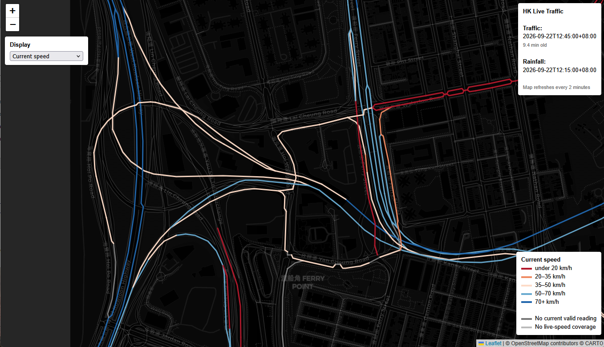

Interactive map

PROJECT 01 / LIVE DATA
Live Hong Kong Traffic Speeds
A live network view of current road speeds, automatically refreshed from Hong Kong government traffic feeds and presented alongside the timing of current rainfall data.